Graphic design history notes
Start

Bubbles | Sir John Millais | 1887

La Goulue | Toulouse-Lautrec | 1891
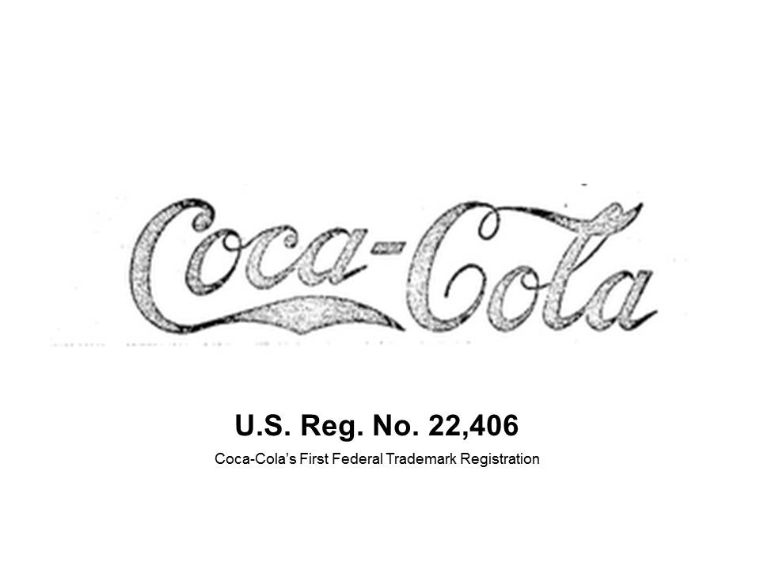Trademark | Coca-Cola | 1893
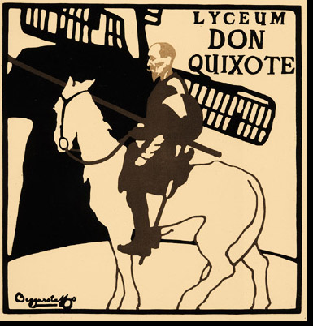Don Quixote | The Beggarstaffs | 1895
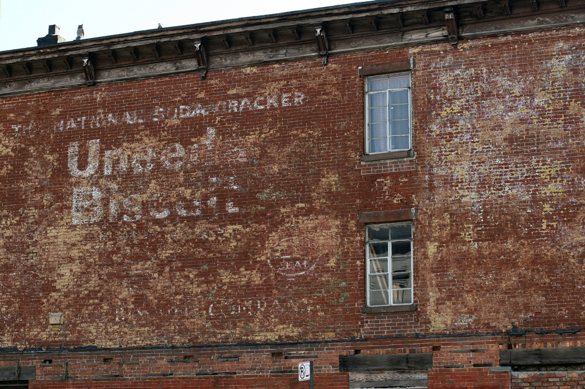Uneeda Biscuit Slogan | N.W. Ayer | 1898

Lucian Bernhard | Priester Match | 1905

Peter Behrens | Allgemeine Elektricitäts-Gesellschaft AG |1907
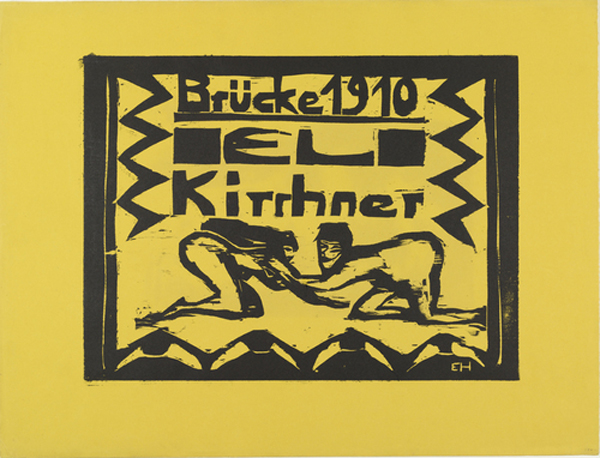Ernst Ludwig Kirchner | Die Brücke | 1910

Ludwig Hohlwein | Munich Zoo | 1912
 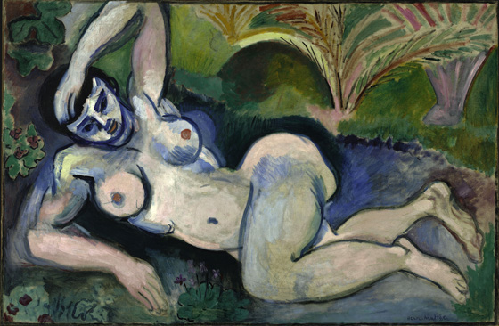
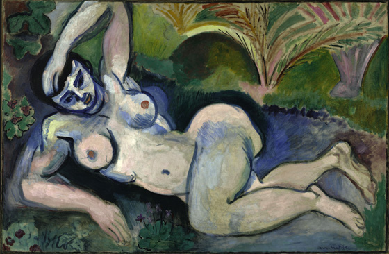


Armory Show | European avant-garde art in America | 1913

Noburo Ofuji | First animated film | 1913
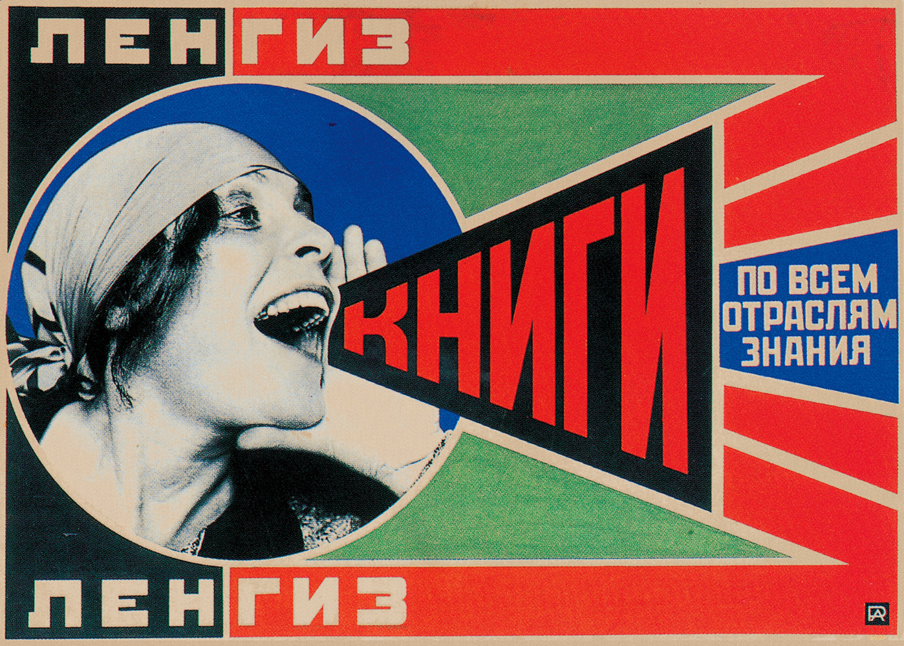Alexander Rodchenko | Productivism posters | 1921

Alexei Gan | Costructivism manifesto | 1922
 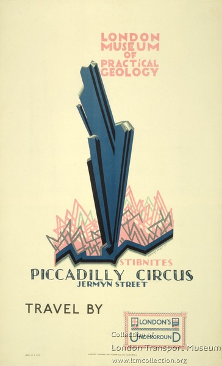
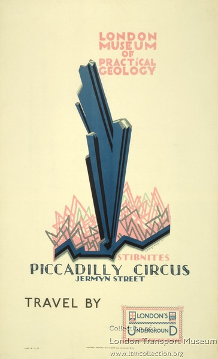
Edward Mc Knight Kauffer | London Transport System | 1922

Piet Mondrian | Tableau 2 | 1922
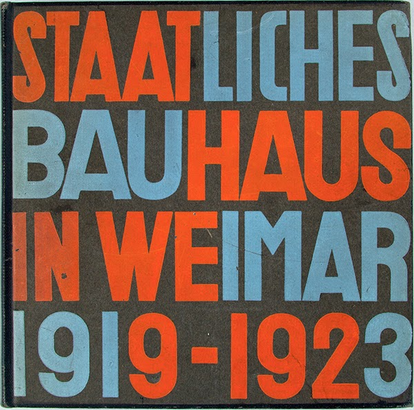Herbert Bayer | Cover Bauhaus Magazine | 1923


 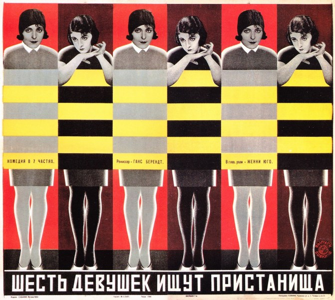
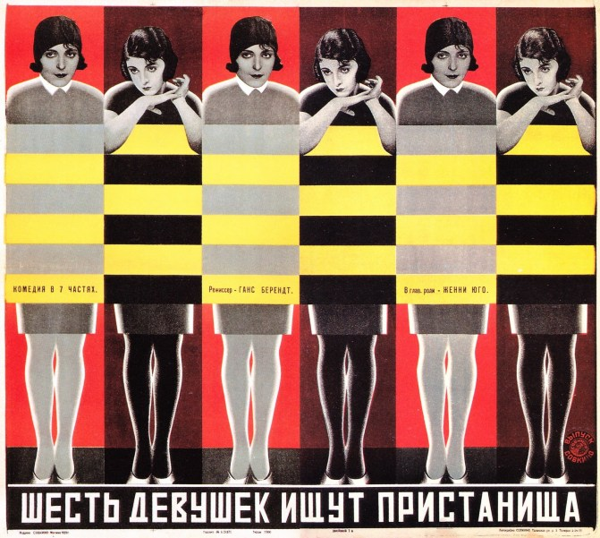

Stenberg Brothers | Russian Film Posters | 1923-33

El Lissitzky | Artist as Consctructor | 1924

André Breton | Manifesto Surrealism | 1924

Fritz Lang | Metropolis | 1926

Paul Rennner | Futura Typeface | 1927
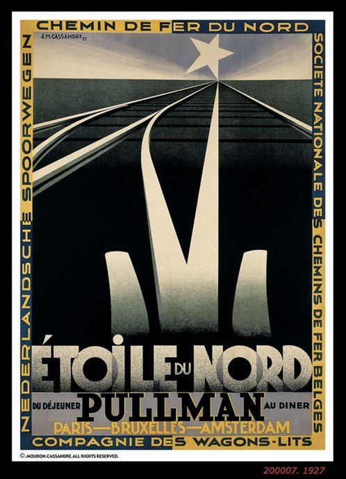A.M. Cassandre | Railway Poster | 1927

John Heartfield | Photomontage | 1930-38

Herbert Matter | Swiss Travel Posters | 1934

Lester Beall | Rural Electrification Adiministration | 1937

Pablo Picasso | Guernica | 1937

Alex Steinweiss | Invention Illustrated Album Cover | 1939

Paul Rand | Directions | 1940
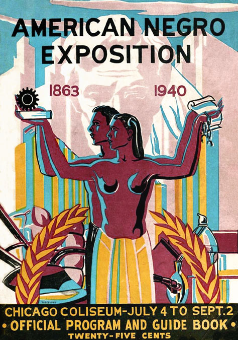Robert Savon Pious | Chicago Coliseum | 1940

Alvin Lustig | New Classics New Directions | 1945-52
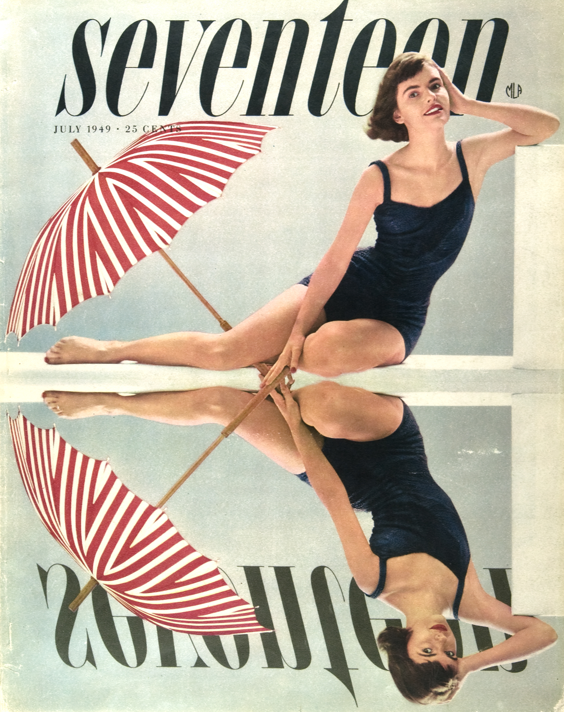Cipe Pineless | Cover Seventeen | 1949

Hermann Zapf | Palatino Typeface | 1949

Jackson Pollock | Autumn Rhythm | 1950

William Golden | CBS symbol | 1950
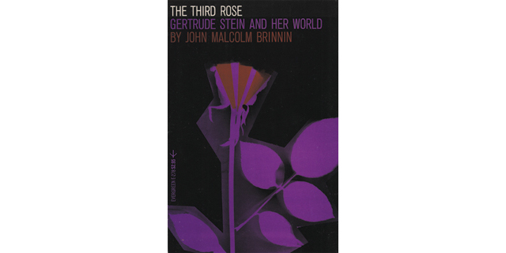Roy Kuhlman | Grove Press paperback | 1951

Adrian Frutiger | Univers Typeface | 1954


Saul Bass | Man with the Golden Arm | 1955
Henryk Tomaszeksi | CYRK | 1950s

Lester Beall | Internationl Paper Logo | 1960

Edouard Hoffman, Max Miedinger | Helvetica Typeface | 1961
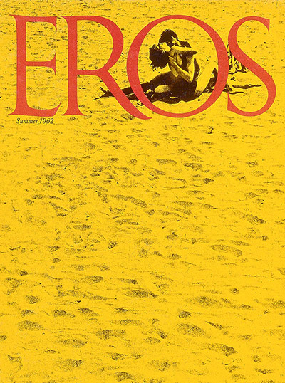Herb Lubalin | Eros Magazine | 1962

The Pepsi Generation Ad | 1963
Pablo Ferro | Title sequence for Dr. Strangelove | 194

Andy Warhol | Campbell Soup | 1965

Tadanori Yokoo | Persona group exhibition poster | 1965

Shigeo Fukuda | Montreal Expo | 1967
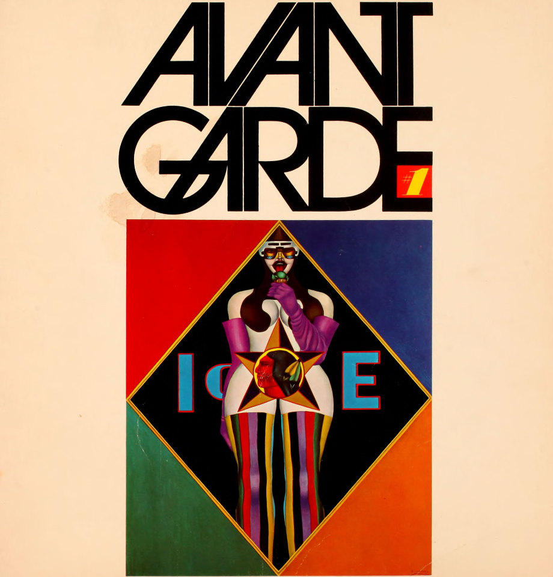Herb Lubalin | Avant Garde Magazine| 1967

George Lois | Esquire cover | 1969

Raymond Loewy | US Mail eagle symbol | 1970


Shigeo Fukuda | Montreal Expo | 1970

Saul Bass | United Way Logo | 1971

Paula Scher | CBS Records, Bartok Cover | 1973

Milton Glaser | I love NY | 1975
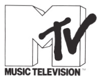Manhattan Design | MTV Logo | 1981
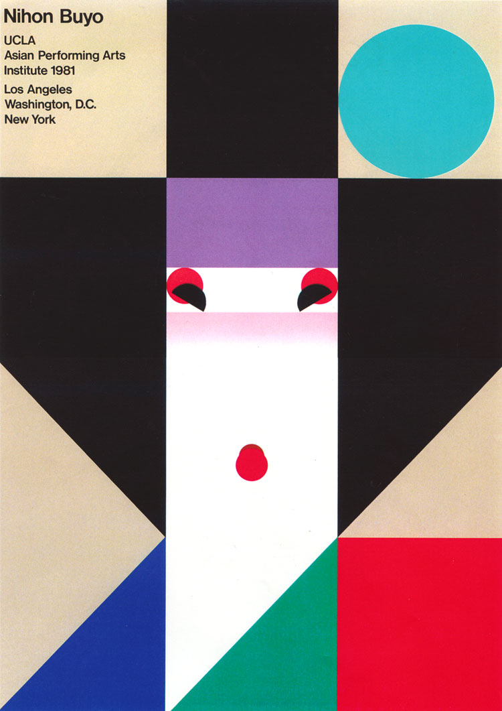Ikko Tanaka | Poster Nihon Buyo Performance | 1981
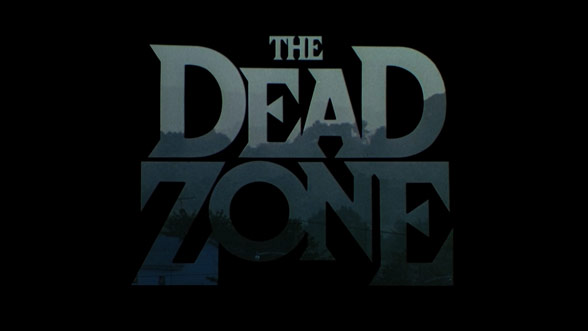R/Greenberg Associates | Title Sequence Dead Zone | 1983

Chiat/Day Agency | Apple Macintosh TV Spot | 1984

Fallon McElligott and Rice | Rolling Stone Perception Reality | 1984

Sussman/Prejza & Company Inc | Graphic Identity Olympic Games LA | 1984
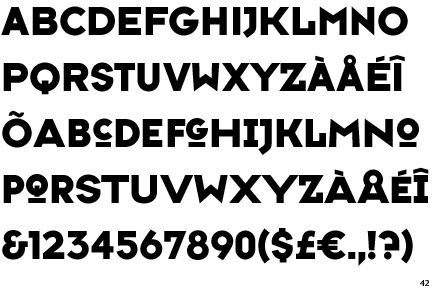Neville Brody | Typeface Six for Face Magazine | 1986

David Carson | Beach Culture | 1988
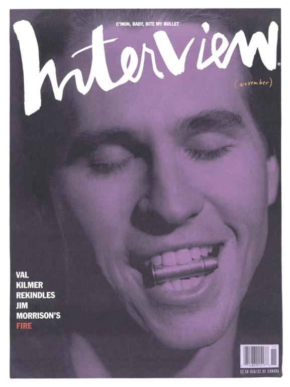Fabien Baron | Interview Magazine Redesign | 1990

David Carson | Ray Gun Magazine | 1993
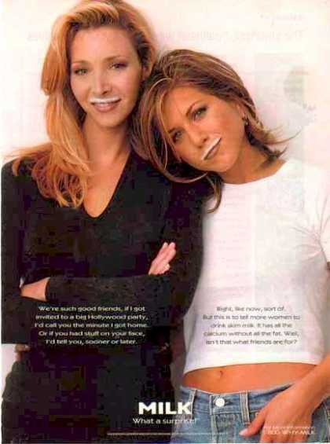Goodby, Silverstein&Partners | Got Milk | 1994
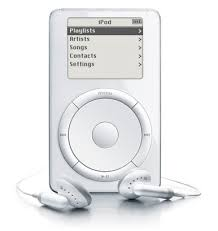Apple Computers | iPod | 2001

Apple Computers | iPhone | 2007